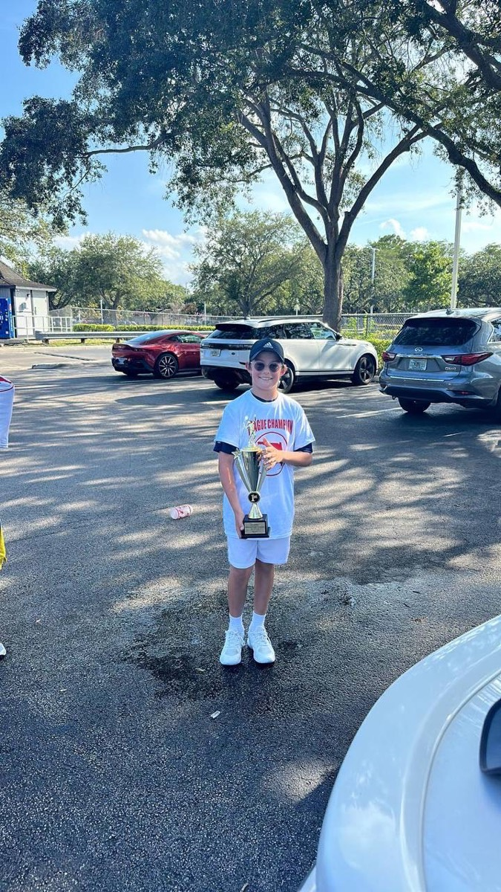
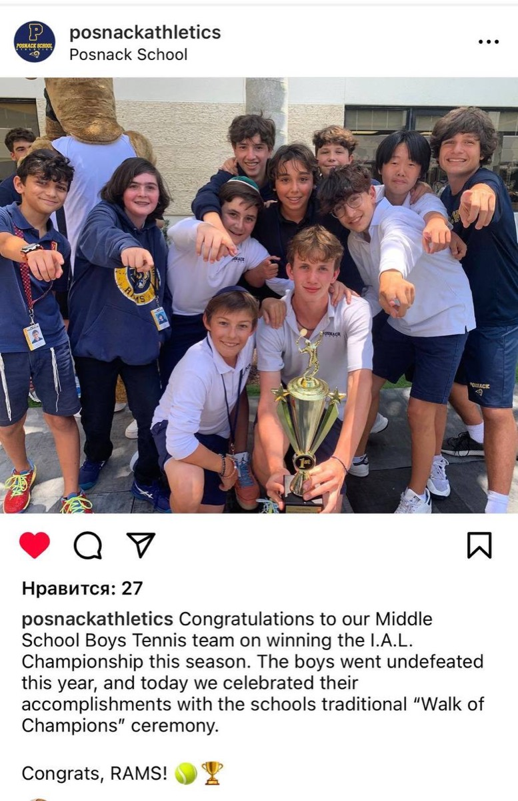
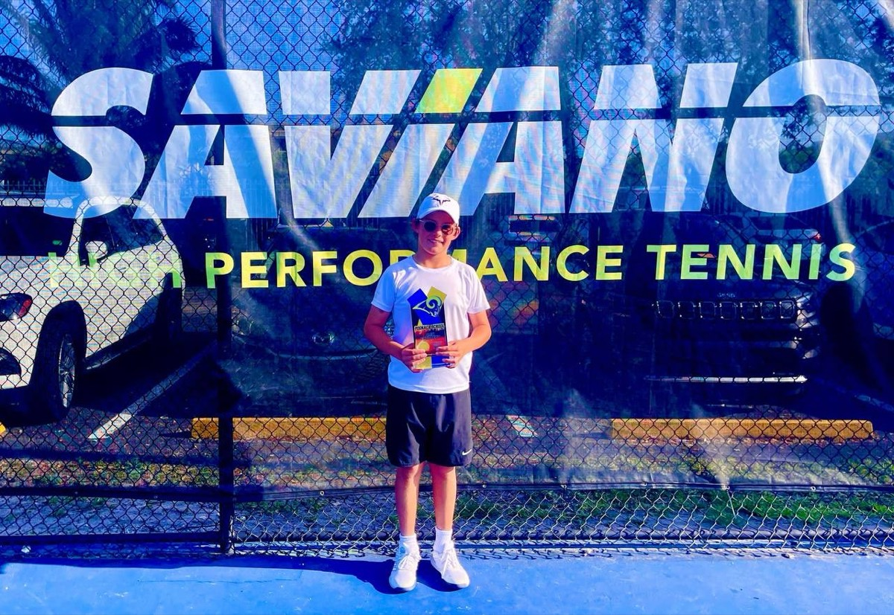
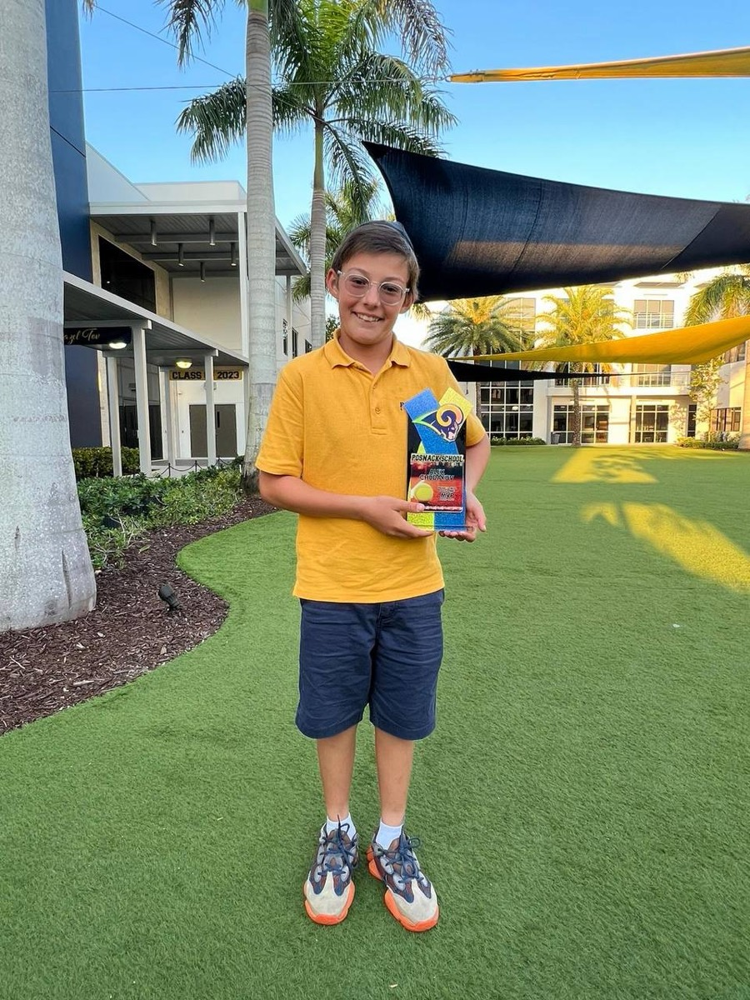
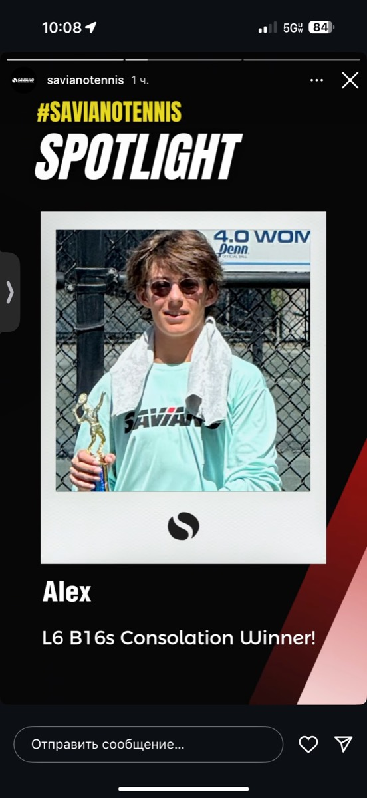
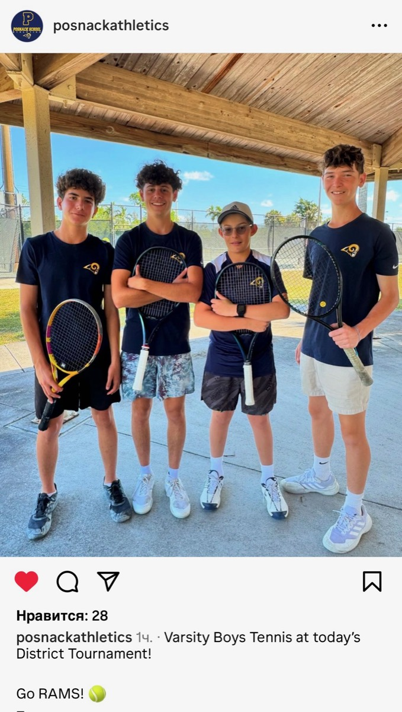
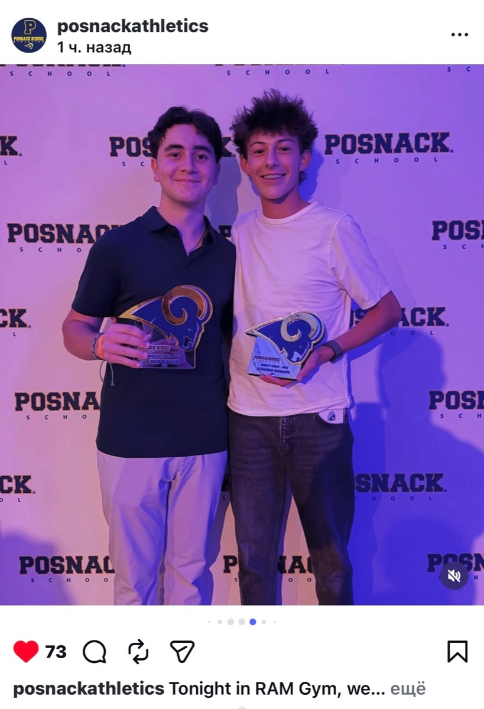
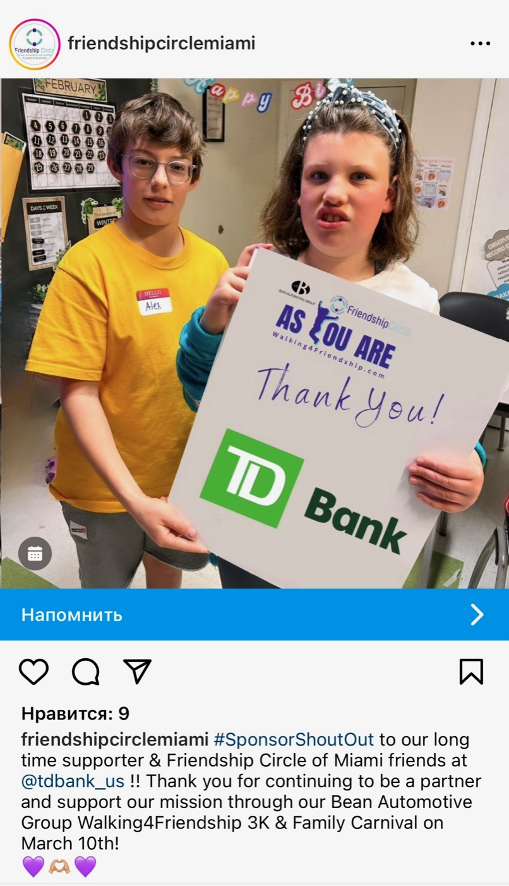
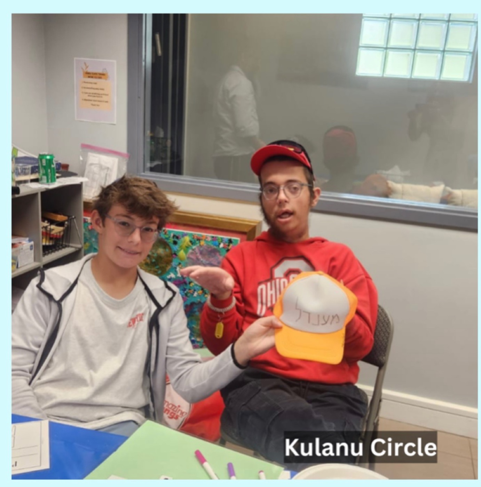
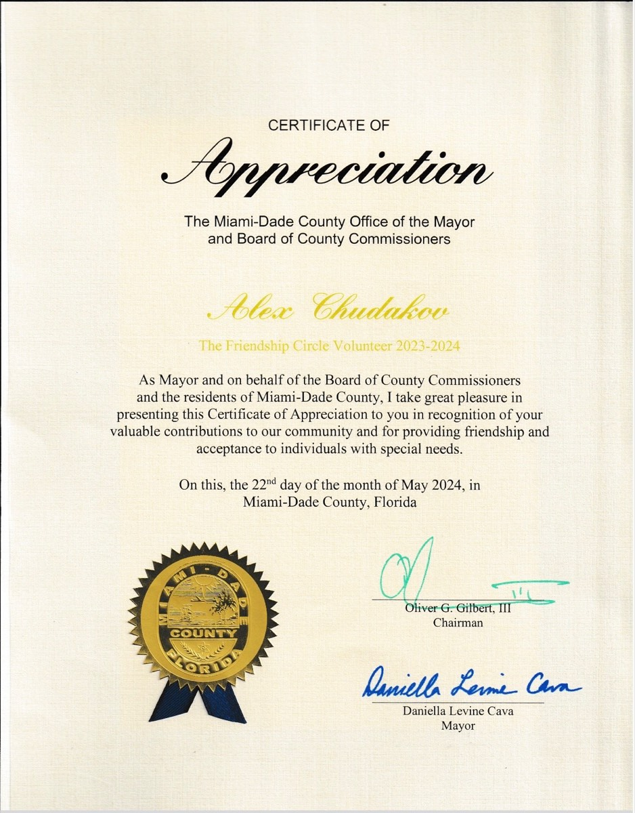

Student • Tennis Player • Technology Builder • Musician
Hi, I'm Alex. I love trying new things and figuring out how they work. Whether I'm playing competitive tennis, building AI projects, practicing piano, or spending time fishing, I enjoy learning, solving problems, and challenging myself to get a little better every day. Growing up between Russia and the United States taught me how to adapt to new situations and appreciate different perspectives. Recently, I've become really interested in artificial intelligence because it lets me take an idea and actually build something people can use. Thanks for visiting—I hope this gives you a better picture of who I am and what I'm passionate about.
An AI-assisted platform that analyzes a player's serve and groundstrokes from an ordinary smartphone video and returns structured, coach-style feedback. TennisAC combines my interests in tennis, programming, and artificial intelligence—it's the project I'm most excited to keep developing over the next few years.
One of the biggest commitment of my life.
Tennis has been the biggest commitment in my life since I picked up my first racquet at five years old. What started as a sport quickly became the place where I learned some of my most important lessons.
Since sixth grade, I've competed on my school's varsity tennis team while also playing USTA and UTR tournaments throughout the year. Being part of a competitive team has taught me that success comes from consistency, preparation, and showing up every day, even when progress feels slow. Along the way, I've been fortunate to help my team win a district championship and to be named Team MVP each season.
Outside of school, I train year-round and compete in USTA and UTR events against players from across Florida. Tennis has shown me how to stay focused under pressure, recover from setbacks, and keep working even when the results don't come right away.
Today I continue to compete, and my goal is to play college tennis while growing as both a student and an athlete. More than anything, tennis has taught me resilience, discipline, and the importance of constantly improving—not just as a player, but as a person.







From my first AI class to building my own tool.
How I went from a first exposure to artificial intelligence to designing, building, and deploying a working project of my own.
At the beginning of ninth grade, I took my first serious step into computer science through the Inspirit AI program. I learned the basic principles of artificial intelligence and explored how AI models can be used to solve practical problems. As part of the course, I built a simple chatbot. The experience sparked my interest in learning how technology could be used to create tools of my own.
After Inspirit AI, I wanted a stronger foundation in computer science, so I enrolled in Harvard's CS50. Through the course I studied programming, algorithms, problem-solving, data structures, web development, and the process of turning an idea into a functional project.
Note: keep only the technologies Alex actually used in CS50.
To complete CS50, students design, build, present, and submit an original final project. For mine, I created a tennis-focused website using Python and web-development tools. Building it showed me that I could combine two areas that matter to me—tennis and technology.
My CS50 project led me to a larger idea: a tool that could analyze tennis technique from an ordinary smartphone video. That idea became TennisAC, an AI-assisted platform designed to evaluate parts of a player's serve and groundstrokes and provide structured feedback.
Building TennisAC taught me that creating a working product requires more than writing code. I had to identify problems, test different approaches, study failures, improve the user experience, and decide which features were genuinely useful.
My next goal is to improve TennisAC by testing it with real users, collecting feedback, and expanding its ability to analyze movement through pose estimation and body-landmark tracking. I want to explore whether the platform can provide useful, consistent feedback across different players, camera angles, and skill levels.
I'm interested in researching whether match history, opponent strength, score patterns, recent performance, and other measurable factors can help predict changes in a player's UTR. I'd like to compare an AI-based prediction model with actual rating changes and study where the predictions succeed or fail.
Progress, one step at a time.
Over the years, I have studied classical piano, music theory, and ensemble performance. Learning new pieces has taught me patience, discipline, and the importance of steady practice. Like tennis, music reminds me that meaningful progress comes one step at a time.
I've had the opportunity to perform at school ceremonies, annual studio recitals, and community events. The performances that mean the most to me, though, are the ones at senior living communities. Watching residents smile, sing along, and share memories connected to the music has shown me that a simple performance can brighten someone's day.
At the end of this school year, I organized a community piano recital featuring seven students from my piano teacher's studio, including my younger brother, Ivan. Together, we performed for the residents of Oakmonte Village Senior Living. Organizing the recital—from coordinating the students to putting together the program—gave me the chance to combine my love of music with community service. I earned volunteer service hours through the event, but the most meaningful reward was seeing how music brought joy and connection to the audience.
Being present for others.
Since seventh grade, I have volunteered with Friendship Circle Miami every other Sunday, helping children and teenagers with special needs participate in recreational and social activities. Whether we're playing games, doing arts and crafts, or simply spending time together, I've learned that the smallest moments of kindness and inclusion can make a real difference.
This experience has taught me patience, empathy, and the importance of being fully present for others. I've also realized that meaningful service isn't always about doing something extraordinary—sometimes it's simply making someone feel welcomed, valued, and included.



One of my favorite school experiences was writing an article about my educational trip to Israel for our local Jewish community newspaper. It was my first experience writing for publication, and I enjoyed turning my experiences into a story that others could read and connect with. Seeing my work published taught me the value of thoughtful storytelling and gave me the confidence to keep sharing my ideas through writing.
Fishing.
Fishing is one of my favorite ways to spend time outside. I like that every trip is different, and there's always something new to figure out. Sometimes the fish are biting right away, and other times you have to change your bait, move to a different spot, or simply be patient.
I've learned that the little things matter. Paying attention to the weather, the tide, the water, and even the time of day can make a big difference. Not every trip ends with a big catch, but I enjoy the process just as much as the result.
Fishing is also something I enjoy doing with my family and friends. Some of my favorite memories are early mornings on the water—talking, laughing, and waiting for the next bite. It's a great way to take a break from school and sports, spend time outside, and enjoy being in nature.
Where this is all going.
I don't know exactly where my interests will take me yet, and that's one of the things I enjoy most. Every project I've started has opened the door to something new. Tennis led me to AI, AI led me to programming, and programming led me to building TennisAC.
I'm excited to keep exploring technology, entrepreneurship, and research while continuing to grow as a student, athlete, and musician. I'm looking for opportunities to keep asking questions, take on new challenges, and build projects that make a real difference—and boarding school feels like the place to do all of that at once: teachers who know their students well, teammates who push me, and mentors who can help me grow.